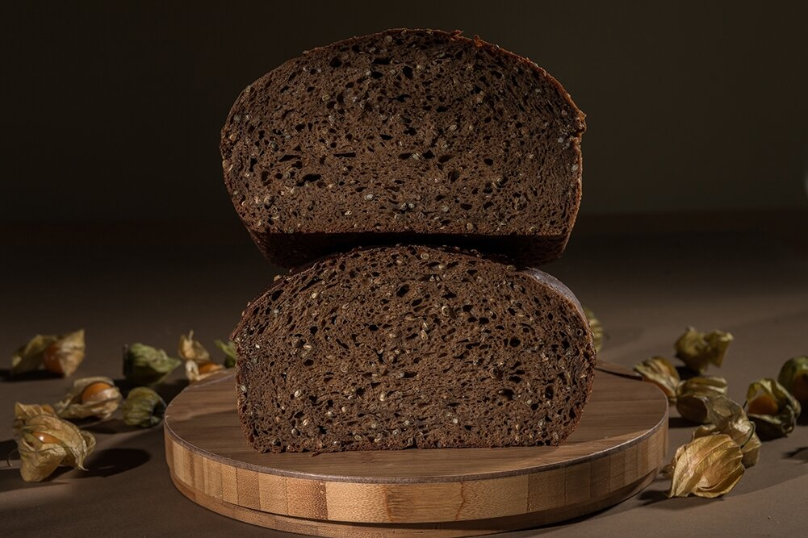

Juoda duona is a traditional Lithuanian bread consisting of ground rye flour, starter, and water. The dough must be kneaded for a long time before baking, and it is always left to ferment overnight. Once it is baked, juoda duona is consumed for breakfast, lunch, and dinner.
Meal prep time : 13 hours 20 minutes
Servings : 36